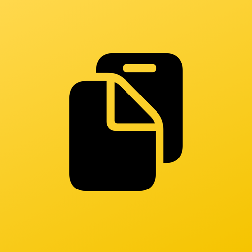
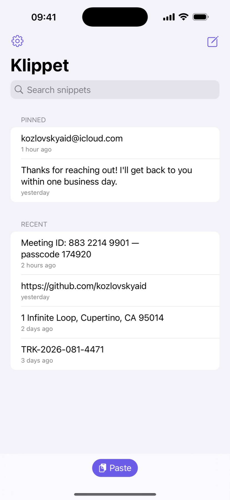
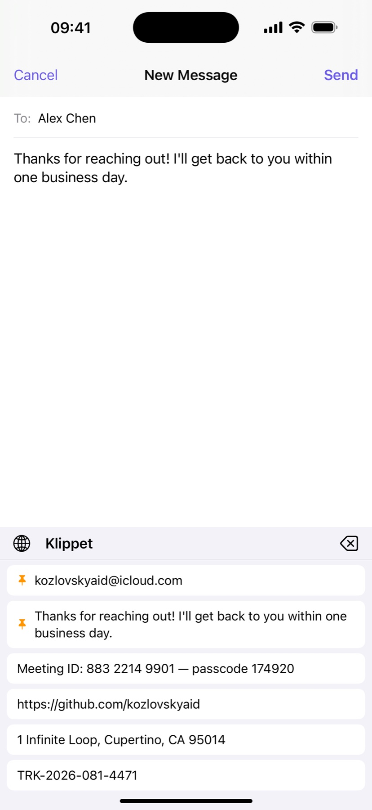
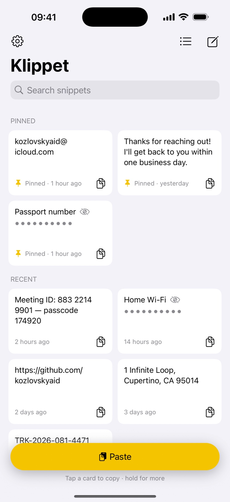
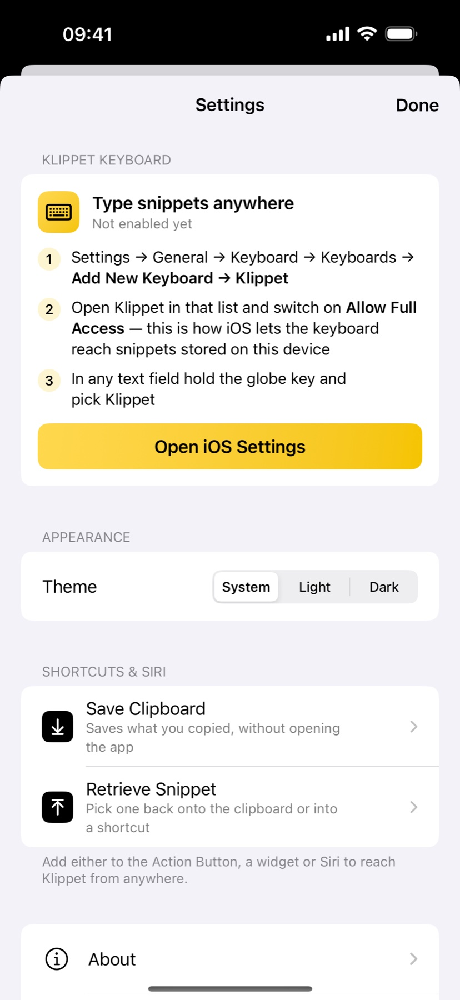
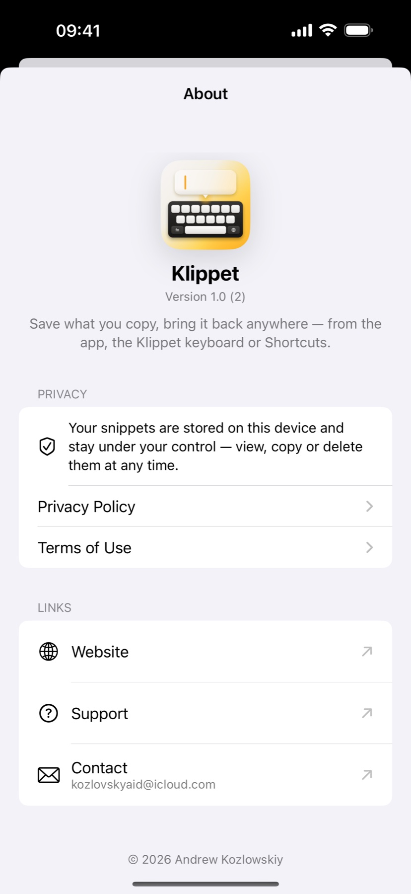

Save what you copy. Get it back anywhere.





One tap in the app, or the Save Clipboard shortcut — from the Action Button, a widget, the share sheet, or Siri
Types any saved snippet straight into the field you are in — in every app
Retrieve Snippet shows your list right inside Shortcuts and puts the pick back on the clipboard
Pin the snippets you use daily; search finds the rest as you type; switch between a list and a grid of cards
Give a snippet a name and hide its text — the list, the keyboard and Shortcuts show only the name; copying still uses the real text
Snippets are stored on your device, work offline, and delete with a swipe
One app, native on both — built on App Intents and the system keyboard